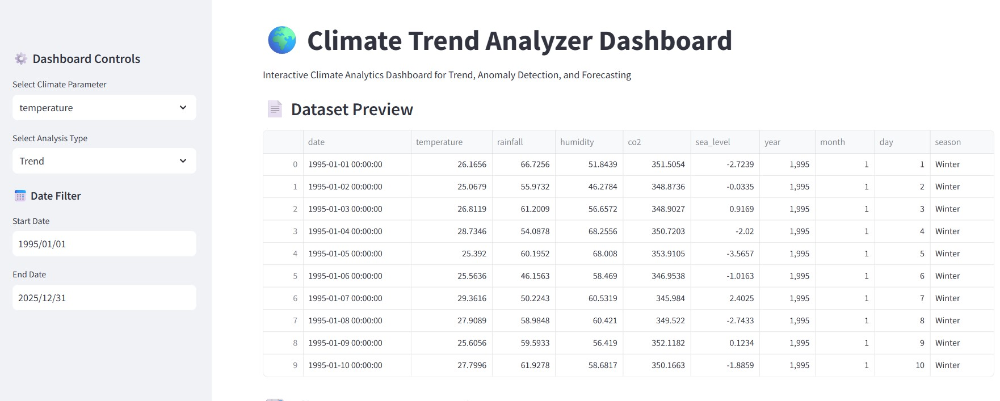
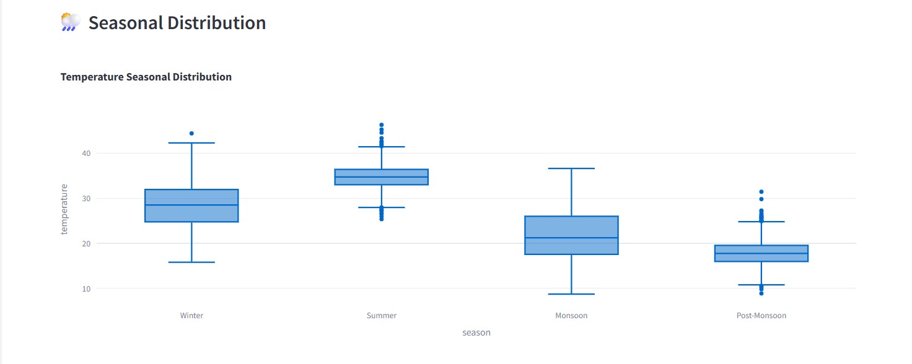
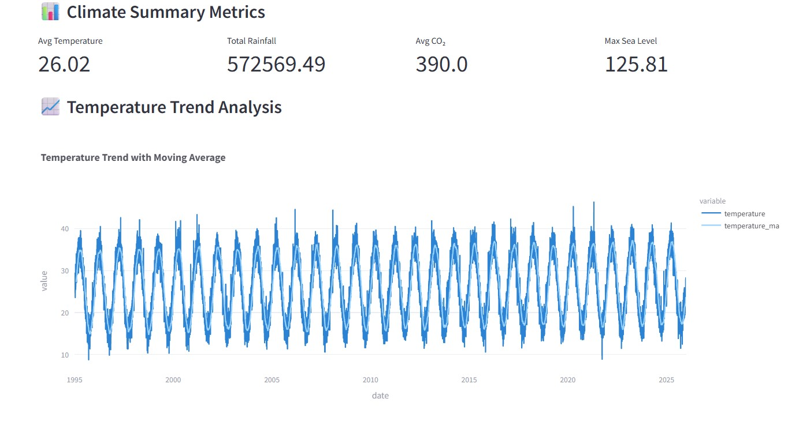
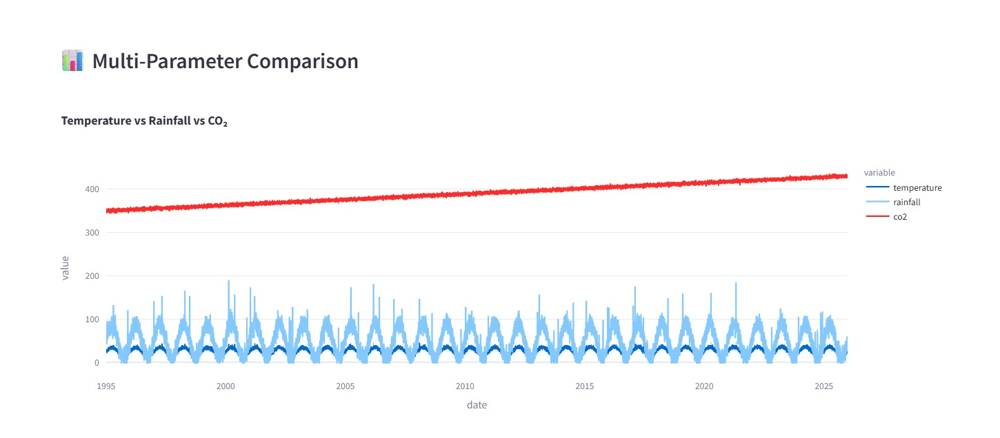
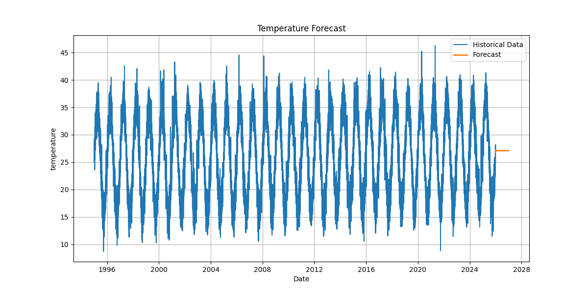
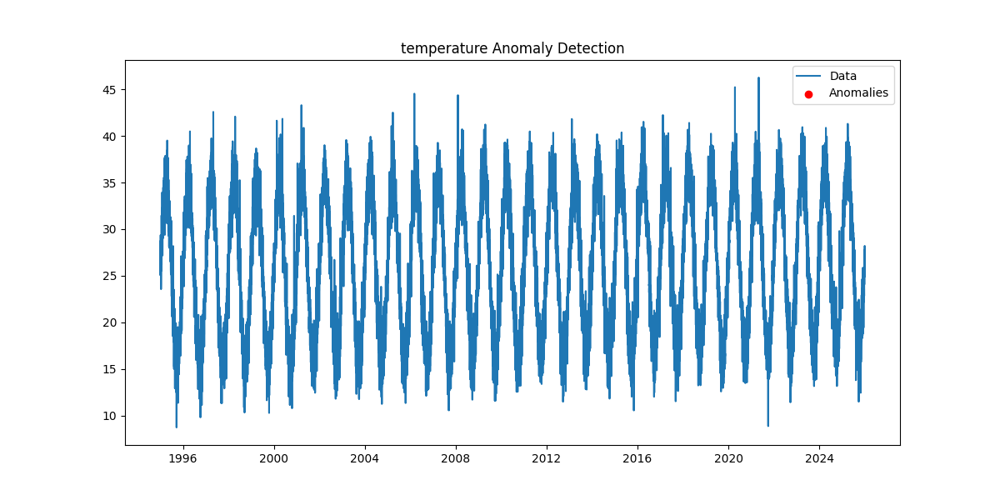
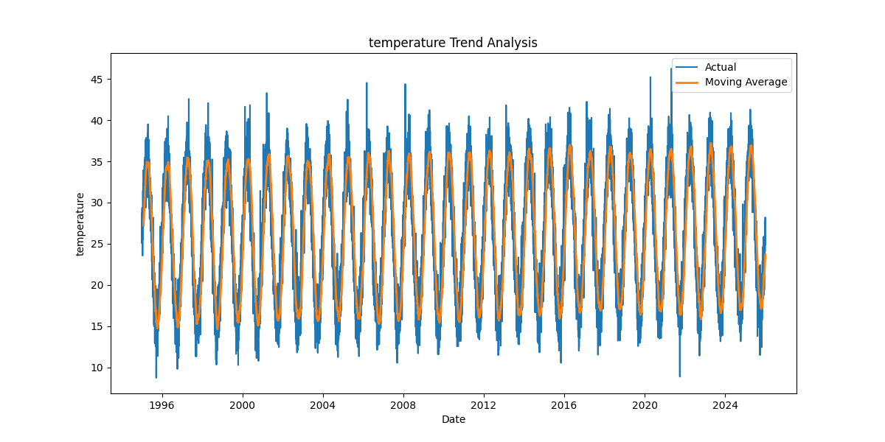

● Developed an end-to-end Climate Trend Analyzer to analyze long-term environmental patterns using time-series data such as temperature, rainfall, CO₂ levels, humidity, and sea-level trends.
● Implemented trend analysis using moving averages and performed anomaly detection using Z-score techniques to identify abnormal climate events.
● Built a forecasting system using ARIMA to predict future climate conditions and visualize long-term climate behavior.
● Designed an interactive Streamlit dashboard with dynamic filtering, parameter selection, seasonal analysis, and real-time visualization using Plotly.
Key Features:
📈 Climate Trend Visualization
🚨 Anomaly Detection System
🔮 Future Climate Forecasting
📅 Date Range Filtering
🌦️ Seasonal Analysis
📊 Multi-Parameter Comparison
📥 Forecast CSV Download Option
Technologies:Python, Pandas, NumPy, Plotly, Streamlit, Statsmodels (ARIMA), Matplotlib, Scikit-learn
CSV File Structure:
date,temperature,rainfall,humidity,co2,sea_level
1995-01-01,26.4,52.1,63.5,352.4,1.2
1995-01-02,27.1,48.7,61.8,351.9,1.5
1995-01-03,25.8,50.2,60.4,352.1,1.7
Project Files: Climate
Output:






